Tile tensors#
Tile tensor is a powerful and simple tool for handling tensors under encryption. It takes care of the packing details, how a tensor is flattened, and how its data is laid out within ciphertexts, while offering the usual API of a tensor, with operations like add, multiply, sum-over-dim, etc.
The packing method is controlled by the tile tensor shape. This is a simple language that defines the shape of the tensor, and how it is packed.
The various options achievable with tile tensor shapes cover many packing options known in the literature (see examples below), unify them to a generic framework, generalize upon them, and add novel possibilities
Tile tensor shapes#
Demo
Try the following tile tensor shapes:
[5/2,6/4]
[5/2,1/4]
[5/2,*/4]
[5/2,1?/4]
[5/2,6?/4]
[5/2,6~/4]
[5/2,6~?/4]
Logical representation#
A tile tensor
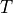
contains some tensor packed divided among several
tiles or ciphertexts. logically represents , meaning you can work with
as if it was , ignoring the packing details.
packed divided among several
tiles or ciphertexts. logically represents , meaning you can work with
as if it was , ignoring the packing details.
For example: executing
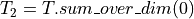
will return a tile tensor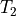
that logically represents a tensor equal to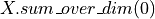
.To simplify working with tile tensors, they provide the same set of operators ordinarily supported by tensors: elementwise operators, matrix-multiplication, sum_over_dim, convolution, rotate (roll), slice, etc.
Here too, the way these operators are implemented covers and generalizes upon many known techniques from the literature. See examples below.
Examples from the literature#
To implement a matrix-vector multiplication of a matrix  with a vector
with a vector  as in [1]. Simply do:
as in [1]. Simply do:
Pack the matrix
of shape 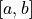
in a tile tensor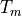
with shape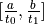
Pack the vector
of shape in a tile tensor 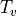
with shape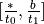
Compute the elementwise product
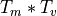
then sum over the second dimension.
Here,
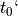
and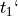
can have any value such that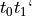
is the number of slots in a given ciphertext. They can be tuned to optimize various goals, e.g., latency, throughput, memory, or network bandwidth.A generalization for matrix-matrix multiplication as in [2] is as follows.
Pack matrix
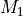
of shape in a tile tensor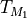
with shape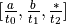
Pack matrix
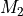
of shape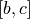
in a tile tensor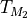
with shape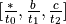
Compute the elementwise product
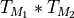
then sum over the second dimension.
The authors of HyPHEN [3] describe several methods for convolutional networks that can also be written using the tile tensor notation. For exmaple, the CAConv with SISO method is implemented as follows.
The input image
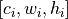
is packed as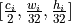
.The kernels
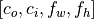
are packed as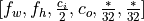
.The computation is the same as the tile tensor’s convolution operator.
The result is packed as
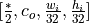
.
Tile tensors generalize on the above, using interleaved packing to support arbitrary image size and aribtrary tile sizes.
References#
[1] Crockett, E.: A low-depth homomorphic circuit for logistic regression model training. Cryptology ePrint Archive (2020). Link
[2] Rizomiliotis, P., Triakosia, A.: On matrix multiplication with homomorphic encryption. In: Proceedings of the 2022 on Cloud Computing Security Workshop, CCSW’22, p. 53–61. Association for Computing Machinery, New York, NY, USA (2022). Link
[3] Kim, D., Park, J., Kim, J., Kim, S., Ahn, J.H.: HyPHEN: A hybrid packing method and its optimizations for homomorphic encryption-based neural networks. IEEE Access (2023) Link.
[4] KKrastev, A., Samardzic, N., Langowski, S., Devadas, S., & Sanchez, D. (2024). A Tensor Compiler with Automatic Data Packing for Simple and Efficient Fully Homomorphic Encryption. Proceedings of the ACM on Programming Languages, 8(PLDI), 126-150. Link.